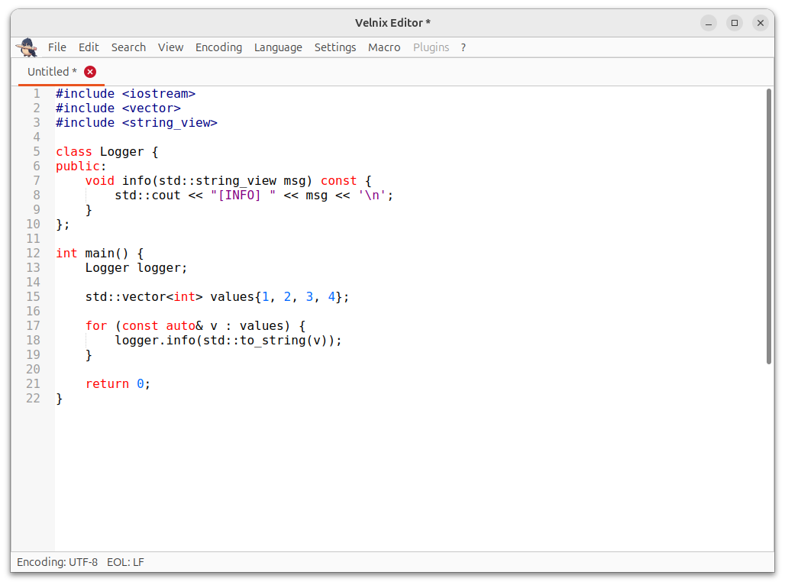
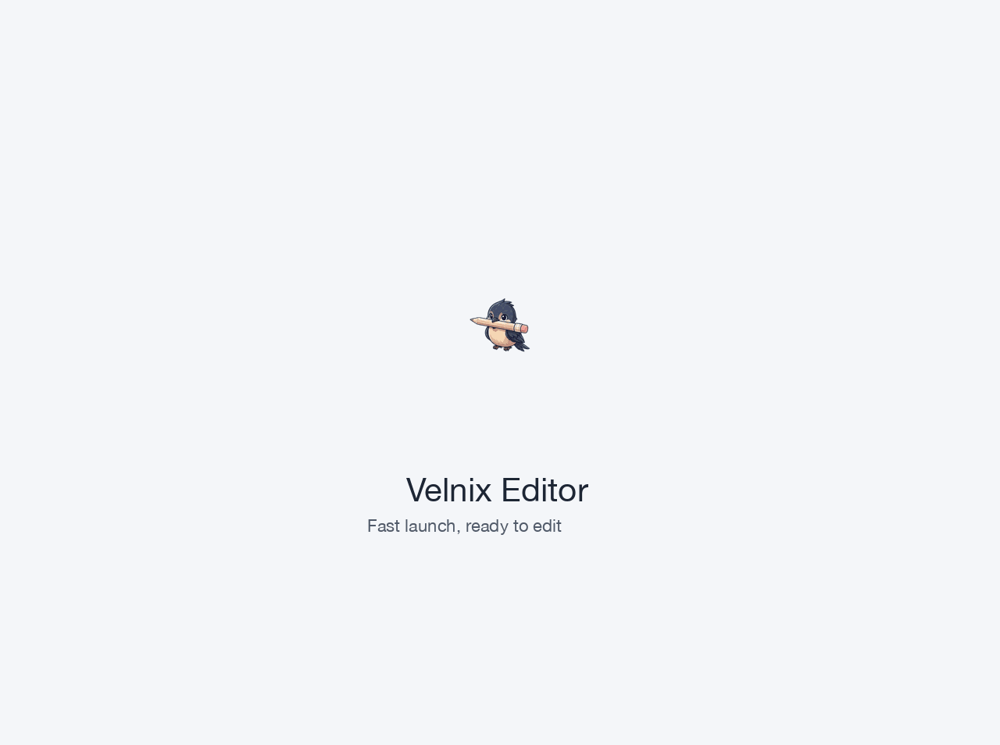
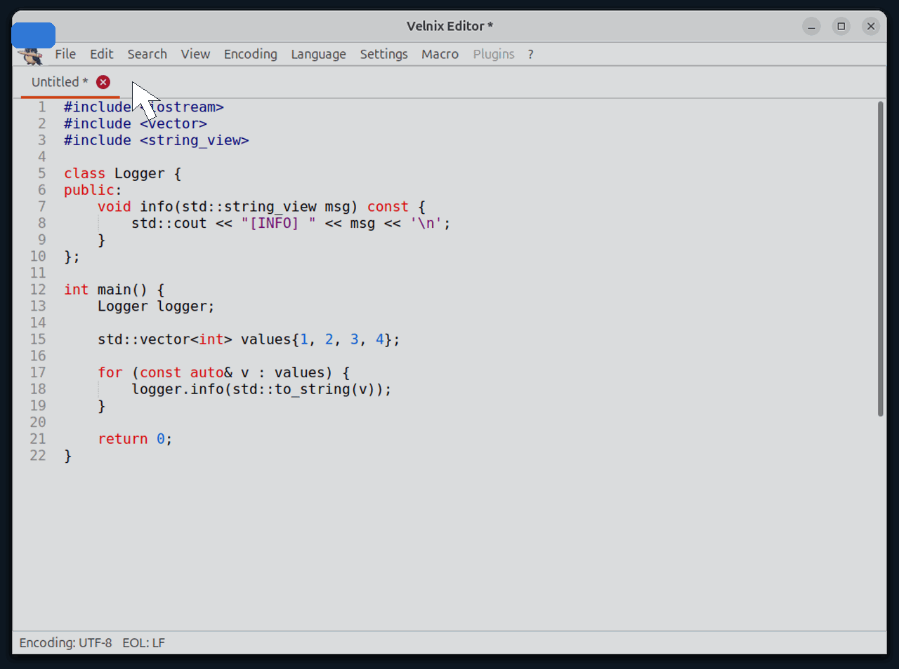
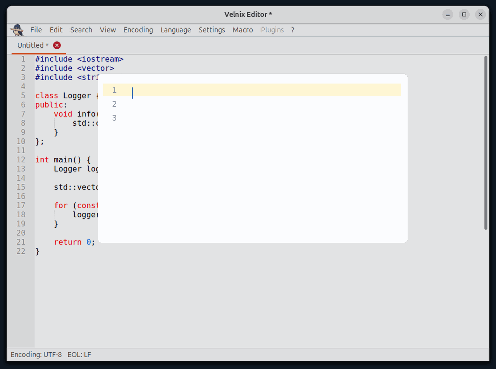
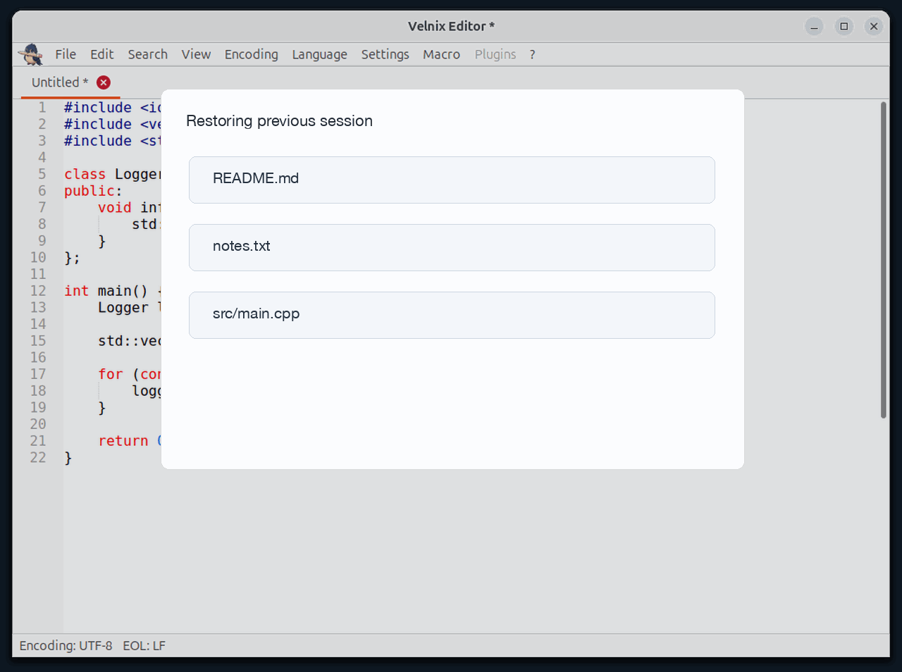
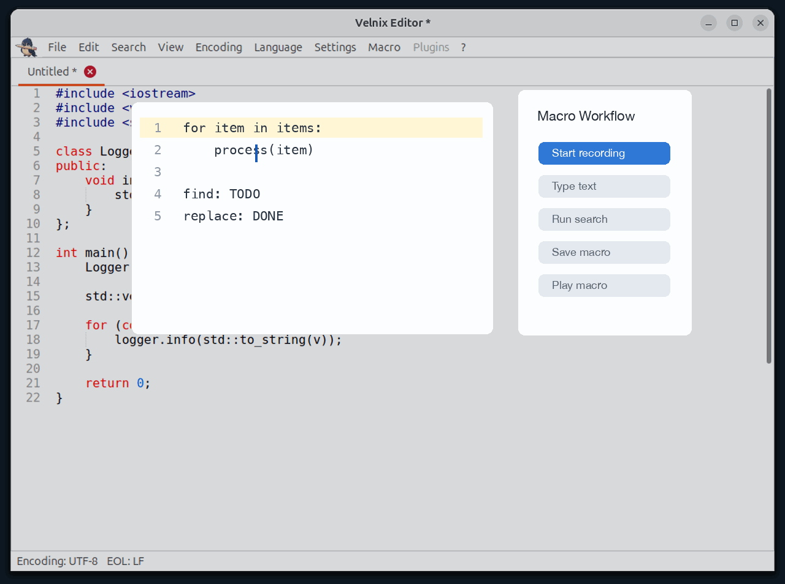
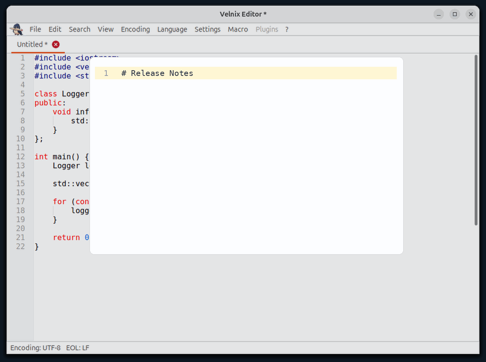

Opens quickly with low overhead and responsive native performance.
Comfortable editing for logs, notes, configuration files, and code.
Restore tabs and continue working after reopening the application.
Find and replace, syntax highlighting, macros, encoding conversion, and more.

Launch quickly and get straight back to editing.

Open files and switch between tabs without friction.

Simple, responsive editing for everyday text work.

Pick up where you left off after reopening the app.

Record and replay repetitive editing actions.

Keep Markdown documents easier to read while editing.
Velnix Editor is made for people who want a capable editor without the weight of a full IDE. It keeps the common editing loop simple: open quickly, edit comfortably, search confidently, save safely, and keep moving.
It is a good fit for quick source-code changes, Markdown notes, config edits, logs, scripts, and other everyday Linux text files.
Velnix Editor is free software released under the GNU GPLv3. The project source code is public, and users can review the code, report issues, follow releases, or build their own copy. The project name, logo, and application icon are protected brand assets.
For project questions or feedback, contact the author at bajielyf@gmail.com.